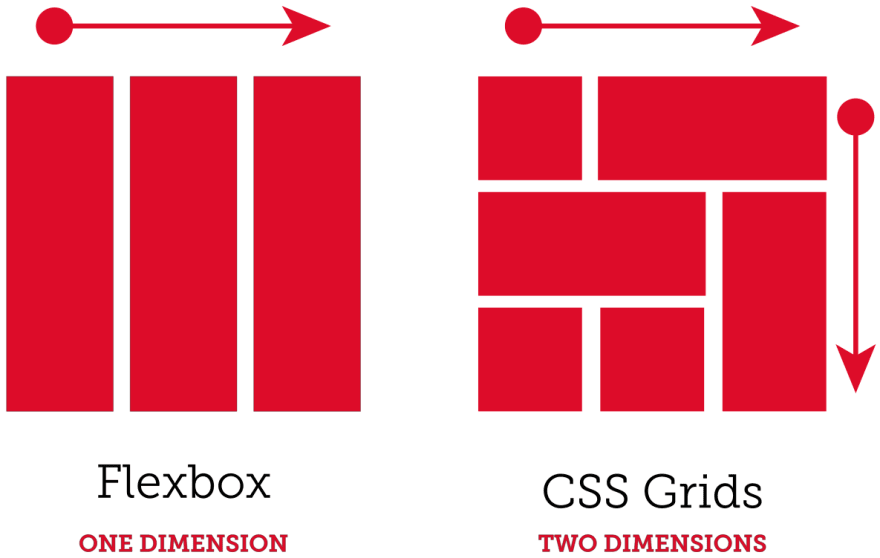

Використання відносних величин у CSS є важливою частиною створення адаптивних сайтів, оскільки вони
дозволяють інтерфейсу гнучко змінювати розміри залежно від розмірів екрана користувача. Відносні
одиниці зручні, коли треба створити макет, який добре виглядатиме на різних пристроях (мобільних
телефонах, планшетах, комп'ютерах).

Властивості min-width і max-width використовуються для створення адаптивного дизайну, дозволяючи
задавати мінімальні та максимальні розміри елементів. Це корисно для обмеження розмірів елементів,
щоб вони не ставали занадто маленькими або занадто великими на різних розмірах екранів.

Флексбокс (Flexbox) і CSS Гріди (Grid) — це потужні інструменти для створення адаптивних макетів, що
дозволяють легко розміщувати елементи на сторінці, а також робити їх гнучкими та адаптованими до
різних розмірів екранів.
Медіа-запити (media queries) в CSS дозволяють створювати адаптивні дизайни, які змінюють зовнішній
вигляд і поведінку веб-сторінки залежно від розміру екрана, орієнтації або інших характеристик
пристрою. Вони є основним інструментом для адаптації веб-сайтів до різних пристроїв, таких як
мобільні телефони, планшети та великі монітори.
Дуже важливою частиною адаптивного дизайну є приховування елементів.
В верстці часто зустрічаютья елементи які є не такі важливі і при зменшенні
вьюпорту є можливість їх прибрати. А також можна тимчасово приховувати важливі елементи,
наприклад меню до того як буде клік по значку бургерменю.
Mobile First — це підхід до розробки веб-сторінок, при якому спочатку створюється дизайн і стилі для
мобільних пристроїв, а потім, за допомогою медіа-запитів, додаються стилі для більших екранів
(планшетів, ноутбуків і десктопів). Це дозволяє забезпечити швидкість завантаження і оптимальну
роботу сайту на мобільних пристроях, що особливо важливо, оскільки більшість користувачів тепер
використовують мобільні телефони для перегляду веб-контенту.